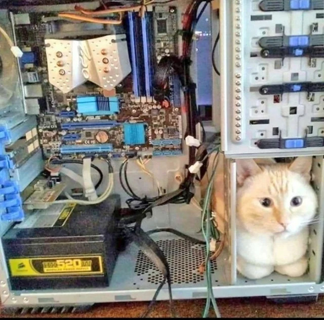

Hi! This is my first post!
November 30th, 2025
Hello! As this is my first post, I'm not sure what to write about. It does feel a bit strange to be writing a blog post about writing a blog post, but here we are!
I wanted to start this blog as a way to share my thoughts and experiences with my future self. I hope to write about anything I feel like writing really, from my professional experiences to movies I think everyone should watch.
So, future Manu, I'll see you in a bit!
PS: I'll just leave a cute picture of a cat here so it doesn't feel too empty.